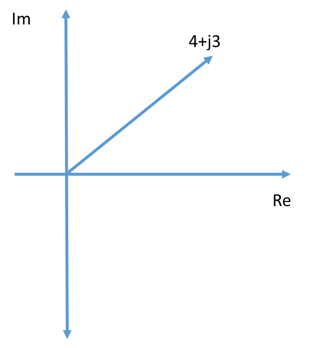

Objective 2.3#
LO# |
Description |
|---|---|
2.3 |
I can model capacitors and inductors as complex resistors and use circuit analysis tools (such as voltage dividers, Ohm’s Law, and the power equation) to calculate voltage and power in AC circuits containing these components. |
Complex Math#
Earlier in this course, we introduced the concept of AC circuits and how they differ from DC circuits. As you may have already gathered, the changing voltage and current in AC circuits makes them a bit more complex to design and analyze than DC circuits; however, many technologies we take for granted, such as our efficient power transmission system and communications systems, would not be possible without AC circuits. In this objective, we are going to build on the math needed to handle more advanced AC circuits and introduce some additional types of electrical components.
First, we need to point out that not all electrical components have the same voltage-to-current ratio for all time. What do we mean by this? To clarify, let’s look at an electrical device we know well at this point, the resistor. The voltage-to-current ratio for a resistor can be fully explained by Ohm’s Law (\(V = IR\)), meaning the ratio between the voltage and the current will always be equal to the resistance, \(R\). No matter how much the voltage or current changes, they will always related to one another according to Ohm’s Law. Some electrical components do not have such a simple relationship between their voltage and current. In fact, many of the electrical systems you use on a daily basis include components that output a different voltage or current depending on how the current or voltage change. These components are primarily known as inductors and capacitors. We use these components to affect how the circuit reacts to certain inputs, and for this reason, we refer to them as reactive components. We choose the size of reactive components based on a few needs: the size of the circuit and the frequencies we need to work with. The voltage and current values for reactive components vary with respect to time, meaning solving for the voltage and current in circuits with reactive components requires solving differential equations. However, by using complex math and only analyzing these circuits at their steady state (i.e. normal operating conditions), we can solve for the voltage and current in these circuits without solving any differential equations.
The easiest way to analyze these components is to leave the time domain and enter the frequency domain. While this sounds scary, it’s actually relatively simple. Before we do this, we will need to introduce a few concepts such as imaginary numbers, the complex plane (for visualization purposes), phasors, and Euler’s identity.
Many of you may recall imaginary numbers from your second level algebra class or your trigonometry class. Recall the definition of the imaginary number (in this class, we’ll use the symbol j, but you’ve probably seen it as i):
This is an important concept even though, by the normal definition, a negative number under the square root does not exist. Often, in the world of electrical engineering, we can simplify our analysis of circuits with reactive components by using these so-called imaginary numbers. Just because an imaginary number is attached to the current or voltage does not mean the voltage or current is “imaginary”. The voltage or current flowing through the component is very real – it is just being used to store energy in a reactive component in the circuit.
Let’s do a little review of some of the properties of j:
We can combine together both “real” numbers and “imaginary” numbers to create “complex” numbers. Consider the complex-plane graph in Figure 1, where we have plotted the complex number 4 + j3. Here, 4 is the “real” part and is plotted on the x-axis, while j3 = 3\(\sqrt{- 1}\) is the “imaginary” part and is plotted on the y-axis. Any number—real, imaginary, or complex—can be similarly located on the complex plane. This give us a way to visualize how these numbers relate to each other and change over time.

Figure 1: A number graphed on the complex plane
We will explain in the future how j calculations work into circuit analysis. For now we will examine the relationship between the time domain and the frequency domain. In earlier lessons, we learned how an electrical signal can be mathematically expressed by the following expression:
where:
Vm = amplitude of the signal
f = frequency of the signal in Hz
\(\phi\) = phase shift
While this expression describes the signal in the time domain, the time domain isn’t always the easiest way to analyze electrical circuits. Fortunately, we have a way to more easily analyze these circuits. We do this through a mathematical expression called Euler’s Identity. We will not derive Euler’s identity in this class; we will simply use it. Euler’s Identity is used to convert between various forms of complex numbers: rectangular form and polar (phasor) form.
Rectangular |
Polar |
Phasor |
|---|---|---|
\(Acos\phi + jAsin\phi\) |
\(Ae^{j\phi}\) |
A \(\angle\phi\) |
Here, A is the magnitude and \(\phi\) is the angle of the complex number. (The angled bracket denotes “angle”.) These different forms are equivalent, but one or the other may be more useful in a given situation. We will see in the future how this is useful in analyzing circuits.
Example Problem 1#
Convert the following complex number from polar form to rectangular form and phasor form.
Key Information:
Knowns: The polar form of the number is \(5e^{j{36.87}^{\circ}}\).
Unknowns: The rectangular and phasor form of the number.
Assumptions: The angle is given in degrees, not radians.
Plan: Use the equivalent forms given by Euler’s Identity to convert the polar expression to the two required forms (rectangular and phasor).
Solve: First, we can convert to rectangular form. From the table above, we see the rectangular form as \(Acos\phi + jAsin\phi\) and the polar form as \(Ae^{j\phi}\). By inspection, we can write the rectangular form from the polar form.
Similarly, we can convert from polar form to phasor form by inspection:
Answer: The polar number \(5e^{j{36.87}^{\circ}}\) can be represented in rectangular form as 4+j3 and in phasor form as \(5\angle{36.87}^{\circ}\).
Note that this number is the same one as plotted in Figure 1. In fact, if you measured the angle from the Real axis (x-axis), you would measure exactly \({36.87}^{\circ}\)!
Example Problem 2#
Convert the complex number 3+j4 from rectangular form to polar and phasor form.
Key Information:
Knowns: The rectangular form of the number is 3+j4.
Unknowns: The polar and phasor form of the number.
Assumptions: The angle is given in degrees, not radians.
Plan: Use trigonometry to convert from rectangular to polar and then convert from polar to phasor by inspection.
Solve: First, we can convert from rectangular to polar form. By a little trigonometry, we find the polar parameters:
Where Re is the real part of the rectangular number and Im is the imaginary part of the rectangular number. Therefore, we have:
So we can write the polar and phasor forms as:
\(Ae^{j\phi} = 5e^{j{53.13}^{\circ}}\) and \(A\angle\phi = 5\angle{53.13}^{\circ}\)
Answer: The rectangular number 3 + j4 can be represented in polar form as \(5e^{j{53.13}^{\circ}}\) and in phasor form as \(5\angle{53.13}^{\circ}\).
Complex Arithmetic#
Basic operations with complex numbers are fairly straightforward, but can also be handled by using your calculator. (Please see the appendix to this reading and take the time to learn how to use your calculator to do complex math.)
For addition and subtraction, simply add or subtract the real and imaginary parts. This is easiest when the number is in rectangular form. Given two complex numbers, \(Z_{1}\) and \(Z_{2}\), add and subtract the numbers as shown below.

For multiplication and division, multiply or divide the magnitudes and add (multiplication) or subtract (division) the phases. Multiplication or division of complex numbers is easiest when the complex number is in polar or phasor form. Given two complex numbers, \(Z_{1}\) and \(Z_{2}\), multiply and divide the numbers as shown below.
Example Problem 3#
Answer the following problems, giving the answers in rectangular form:
(2+j3) + (3+j4)
(2+j3) * (3+j4)
(5+j5) - (3-j6)
(2+j3) / (3+j4)
Key Information:
Knowns: The rectangular form of the numbers.
Unknowns: The final answers.
Assumptions: The angle is given in degrees, not radians.
Plan: Use the complex math rules set out above, converting to the proper form when necessary. Verify using our correctly configured calculator.
Solve:
(2+j3) + (3+j4) = (2+3) + j(4+3) = 5+j7
(2+j3) * (3+j4) = \(\left( \sqrt{2^{2} + 3^{2}}\ \angle\arctan\left( \frac{3}{2} \right) \right)*\left( \sqrt{3^{2} + 4^{2}}\ \angle\arctan\left( \frac{4}{3} \right) \right)\)
= \(\left( 3.61\ \angle{56.31}^{\circ} \right)*\left( 5\angle{53.13}^{\circ} \right)\)
\(= (3.61*5)\ \angle({56.31}^{\circ} + {53.13}^{\circ})\)
\(\ = 18.05\ \angle\left( {109.44}^{\circ} \right)\)=
(5+j5) – (3-j6) = (5-3)+j(5+6) = 2+j11
(2+j3) / (3+j4) = \(\left( \sqrt{2^{2} + 3^{2}}\ \angle\arctan\left( \frac{3}{2} \right) \right)/\left( \sqrt{3^{2} + 4^{2}}\ \angle\arctan\left( \frac{4}{3} \right) \right)\)
= \(\left( 3.61\ \angle{56.31}^{\circ} \right)/\left( 5\angle{53.13}^{\circ} \right)\)
\(= \left( \frac{3.61}{5} \right)\angle{(56.31}^{\circ} - {53.13}^{\circ})\)=0.722\(\ \angle{3.18}^{\circ}\)
Now that we can do the math, let’s look at the components which drive the math: capacitors and inductors. They can be useful for all sorts of things, but especially for creating filters to get rid of unwanted signals.
Capacitors#
Capacitors store electric energy in a circuit. A capacitor is made of two conductive plates separated by a dielectric medium. When the circuit is energized and current is flowing, the dielectric medium keeps the charges separated – positive charges go to one plate, and negative charges go to the other. The charges on one plate are now attracted to the charges on the other plate which is how a capacitor stores energy. The capacitor stores this energy in the form of an electric field.
A capacitor is symbolized in a circuit as shown below:
Figure 2: Capacitor symbol
The units for a capacitor are Farads, named after Michael Faraday, a British electrochemist. Capacitance, or Farads (F), are really Coulombs/Volt. A Coulomb is the unit for charge and a volt is the potential difference between two points. This makes a Farad the amount of charge stored per volt of potential difference. Most capacitors are rated in the 10^-6^ or microFarad (µF) range, which is clearly very small!
Because a capacitor doesn’t charge instantaneously, it is a reactive element, meaning the voltage or current reacts to changes in the other variable. For a capacitor, the current only exists if the voltage is changing. This can be seen in the equation below.
This is an ordinary differential equation. A quick look at it tells us that current only flows when a voltage is changing across the parallel plates of the capacitor and that the current is proportional to how quickly the voltage is changing across the capacitor. This concept helps explain why many systems don’t respond instantaneously when you push a button – those buttons have capacitance (and, often, inductance) which take time to charge. Also, you have probably experienced a similar phenomenon when you unplug your AC adapter from the wall – the LED light continues to glow for a short time while the elements inside discharge their current. Also, take note that capacitors don’t “like” large changes in voltage. For example, if the voltage changes a large amount over a very short time, the time derivative of the voltage (\(\frac{\partial V}{\partial t}\)) goes to infinity, which results in a very large current. The following graph gives an idea of how voltage builds up within a capacitor over time, which is a function of charge accumulating at each of the plates within the capacitor.
Figure 3: Voltage buildup on a capacitor over time
You can see, as time goes on, the capacitor will reach what is called “steady state” which occurs when the capacitor is fully charged. There is an easier way to model a capacitor when you are acting in a steady state system – the system receives an input and has a chance to “work through” this transient part of the signal. At this point, we can use complex math to treat the capacitor in a manner similar to a resistor.
Inductors#
The other reactive electrical component we will study is the inductor. An inductor is, quite simply, a coil of wire around a core, which is typically made of air or metal. The coil creates a magnetic field when a current is passed through it. While a capacitor does not like large changes in voltage, an inductor does not like large changes in current. The inductor tries to conteract changes in current by setting up a magnetic field within its coils. This is how an inductor stores its energy. Once power is removed from an inductor, the magnetic field collapses and no energy is stored. Unlike a capacitor, you never need to discharge an inductor – it will discharge itself!
An inductor is represented in an electrical circuit as shown below:
Figure 4: Inductor symbol
The unit for an inductor is the Henry, abbreviated H. However, when used in an equation, an inductor is represented by a capital L. Just like capacitors, inductors vary their electrical parameters with respect to time. This time the relationship is:
This states the voltage across the inductor is equal to the inductance times the change in current with respect to time. In this case, conversely to the capacitor, inductors don’t “like” sudden changes in current, because they result in very large voltages. Also, just like with a capacitor, once an inductor reaches steady state, complex math can be used to treat it like a resistor.
RLC Circuit Analysis#
We learned in Block I how to apply Ohm’s Law, KVL, and KCL to a DC circuit. We also learned how circuit components could be hooked up in either series or parallel. In this lesson, we will learn that reactive electrical components – capacitors and inductors – can be modeled as resistors. Since resistors, inductors, and capacitors commonly exist together in circuits, being able to treat capacitors and inductors as resistors simplifies our analysis by allowing us to use all of the circuit analysis techniques we have already learned. The one catch is that we have to use the complex math in our analysis.
We will start by introducing the concept of impedance, and then we will advance to using impedances with all of the circuit analysis techniques we have already learned – Ohm’s Law, KVL, KCL, equivalent impedance, series, and parallel – in order to solve for voltages and currents in an AC circuit with reactive components.
The Sinusoidal Steady State#
In this class, we are not interested in the rapid changes that can occur in reactive components, so we will focus on the sinusoidal steady-state solution for our AC circuit that contains inductors and/or capacitors. This assumes that any transient voltages or currents have worked their way out of the system and it is now operating in a consistent, repeatable pattern. We would like to avoid the complexity of differential equations to describe this system. The way we do this is by transforming our problem to a new domain. This domain is called the frequency domain and it allows us to replace a tricky differential equation problem by an algebraic problem. The only cost is that this algebraic problem will now require complex numbers and complex math.
Frequency Domain: Impedance#
In the frequency domain, we represent voltage sources and resistors (R’s), inductors (L’s), and capacitors (C’s) by complex numbers. The voltage sources can be modeled by a phasor quantity that is normally given as a complex number in phasor form. The magnitude of this complex number is the RMS value of the sinusoidal source and the angle of this complex number is the phase angle of the sinusoid. The phasor variable is distinguished from the time-domain expression by using a capital letter with a tilde over-score. A phasor quantity implies a sinusoidal quantity back in the time domain. So for instance, we can write the source voltage in either rectangular or phasor form:
Without going into any unnecessarily deep derivations, we can use this expression for signals along with a concept called impedance to analyze AC circuits in the same way we’ve been analyzing DC circuits, it only requires using complex numbers. We symbolize impedance with the variable Z and it is in the units of Ohms. You can think about impedance in the same way you think about resistance – it is a components relationship to the current or voltage. Moving to the frequency domain allows us to write the impedances of resistors, inductors, and capacitors as:
Note that a resistor looks the same whether it is in the time domain or the frequency domain (for most purposes, a resistor’s impedance does not depend on frequency). Also note that impedance is expressed in units of Ohms and \(\omega\), the angular frequency, is expressed in radians/s. We can convert from frequency to angular frequency with the following equation.
Translating to impedance will allow us to apply the same circuit analysis techniques we used during the first few lessons to more complicated circuits that include inductors, capacitors, and AC voltages/currents.
Example Problem 1#
Convert the capacitor, inductor, and resistor in the following circuit to impedance, at 60 Hz.
Understand: We want to convert the resistor, inductor, and capacitor to impedance, which is measured in Ohms.
Identify Key Information:
Knowns: The values of each component.
Unknowns: The impedances.
Assumptions: The angle is given in degrees, not radians.
Plan: We can use the conversion relationships for each component to convert to impedance (Ω).
Solve: First, we can do the resistor. Since the resistor has no frequency dependence:
Next, we can do the inductor:
Finally, the capacitor:
Since we have converted the units to Ohms, we can now represent the components as generic, rather than as resistors, inductors, or capacitors:
Now that we know how to calculate impedances, we can start finding equivalent impedances. Equivalent impedances work just like equivalent resistances, meaning we can use our earlier equations for combining resistors in series and in parallel so long as we replace “R” with “Z” and use complex math. The next example problem will give some practice with this.
Example Problem 2#
Find the equivalent impedance for the following circuit, given an input signal operating at 500Hz.
Understand: Here we have a circuit with series and parallel components and we need the equivalent impedance.
Identify Key Information:
Knowns: We know the individual values of resistance, capacitance, and impedance. Additionally, we know the specific operating frequency.
Unknowns: The individual impedances and the total equivalent impedance.
Assumptions: We are assuming the circuit is in sinusoidal steady state.
Plan: Since we want to combine the impedances, we can only do this if we first convert the individual component values to impedance. Then, we can use the series and parallel relationships we already know and love to consolidate the components.
Solve: First, we calculate the individual impedances:
Now, we have essentially replaced the inductor and capacitor with resistors. As such, we can combine the capacitor and inductor, which are in parallel:
Since \(Z_{eq1}\) is in series with the resistor, we can add the two together, leading to:
\(Z_{eq} = \ Z_{R} + Z_{eq1} = 150\Omega + j0.023\Omega\).
Answer: The equivalent impedance is \(150 + j0.023\Omega\).
Now that we’ve had some practice calculating impedances, we can combine the concept of impedance with Ohm’s law to find the unknown current of a circuit containing RLC components.
Example Problem 3#
Find the expression for the steady state sinusoidal current, is(t), that flows in the following circuit:
Understand: Here, we have a circuit with a sinusoidal input, a resistor, an inductor, and a capacitor. The end goal is to use Ohm’s Law (with complex numbers) to find the current.
Identify Key Information:
Knowns: We know the rectangular form of the input signal and the resistance, inductance, and capacitance of the components. Additionally, we know the frequency, so we can calculate the angular frequency, \(\omega\).
Unknowns: The polar and phasor form of the source.
Assumptions: We are looking for the sinusoidal steady state answer.
Plan: Although this problem seems daunting at first, if we can transform to the frequency domain, we can simply use equivalent impedances with Ohm’s Law in the same way we used equivalent resistances with Ohm’s Law in previous lessons. In order to transform to the frequency domain, we have to convert the input signal to phasor form, and then transform the components to impedances. From there, we can solve for the current using Ohm’s Law and find the rectangular form of the current, is(t).
Solve: First, we convert the input signal to phasor form (ensuring we use the RMS voltage for the magnitude). Recognizing that the frequency of the circuit will not change, we only need to track the amplitude and phase angle; the amplitude and phase can be used to write the output signal in the standard form at the end of the problem:
Next, we find the angular frequency.
\(\omega = 2\pi f = 2\pi(3.18\ Hz) = \ 20\) radians/s
We can use this angular frequency to find the impedances.
ZR = R = 40Ω
Now, since the components are in series and we have all the values in Ohms, we can simply add them together to get:
This leads to the following equivalent circuit:
Now, we can use Ohm’s Law to find the current:
We can use the magnitude (being sure to convert from RMS value to peak value) and the phase angle of the phasor to convert to rectangular (standard) form of the current. In doing so, we start with the AC equation for current, \(I_{m}\cos(360{^\circ}ft + \phi)\). Then, we set \(I_{m}\) equal to the RMS value of the phasor multiplied by \(\sqrt{2}\) and \(\phi\) equal to the phase angle of the phasor. Note that the frequency did not change from the source frequency.
Answer: The current is \(3.394\cos\left( 360{^\circ}(3.18\ Hz)t - {6.9}^{\circ} \right)A\)
Often, when doing analysis on RLC circuits, we want to find the voltage across a specific component – this will be what we refer to as our output voltage. In this case, we can use a voltage divider. To do this, we can use our voltage divider equation, but we replace the “R”s with “Z”s and use the phasor form of the voltage \(V_{total}\). Recall that voltage dividers only work with components placed in series, so the impedances must be in series when using a voltage divider.
Example Problem 4#
Find the ouptput voltage, VC.
Understand: Here, we have a circuit with a sinusoidal input, a resistor, and a capacitor. The output voltage is across the capacitor.
Identify Key Information:
Knowns: vs, Is, R, and C.
Unknowns: VR and VC, but we really are only looking for VC.
Assumptions: We are looking for the sinusoidal steady state answer.
Plan: We could use Ohm’s Law to calculate the voltage across the capacitor, or we could use a voltage divider. For the sake of practice and comparison, we will do both.
Solve: First, we will use Ohm’s Law to find the voltage VC. Since the current is given in the time domain, we need to convert IS to phasor form. Remember, the magnitude of the phasor term needs to be RMS, so we have:
Now we can solve for voltage \(V_{C}\)
Let’s confirm our result by using a voltage divider. First, we need to convert VS to phasor form. Remember, the magnitude of the phasor term needs to be RMS, so we have:
Now, since we already calculated the impedance of the capacitor, we know the equivalent impedance of the entire circuit, \(Z_{eq}\), is \((10 - j3.183)\Omega\), so we can find the voltage across the capacitor as:
Which is the same answer we got before. Notice that we started using our calculator to do the complex math – it certainly makes life easier if you take the time to configure your calculator to do that.
We can now convert our answer from phasor form into the rectangular form, being sure to convert the phasor magnitude from RMS back into an amplitude:
Answer: The voltage across the capacitor is \(3.03\cos(360{^\circ}*5k*t - 72.34{^\circ})V\).
Appendix: Using the Casio fx-115ES PLUS to Calculate with Complex Numbers#
Get your calculator set up for Engineering calculations in complex mode.
a. This is not a mandatory step, but there could be some interaction between settings you have made previously and the following directions. Therefore, I recommend completely resetting the calculator and returning it to “factory default” settings. To do so, 1) Turn on the calculator by pressing the On button; 2) Press Shift, 9 (CLR), 3 (All), = (Yes); 3) Press the AC key to return to the main screen.
b. Next, set the calculator to complex mode by pressing Mode and then 2:CMPLX. You should see the CMPLX indicator just to the left of center at the top of your screen. If you reset the calculator as described in step 1, you should also see a “D” indicating the units for angles are in degrees and “Math”, which means “natural display” of answers is selected. Natural display means that easily reduced fractions will be displayed as fractions, so 4/3 is displayed as 4/3 rather than 1.333 or some other approximately correct value, and 5/4 is displayed at 5/4 instead of 1.25, which is exactly correct.
c. As you enter calculations, you will see some triangles shown in the upper right side of the display. Pressing the up arrow will take you to older results. The down arrow will take you to the more recent results. If both arrows are shown, both older and newer results available. If only up arrow is shown, you are already at the most recent result and only older results are available. If only the down arrow is shown, you are at the oldest result, and only newer results are available. Entering a new calculation brings you back the newest result leaving the other calculations on the stack. If you think of this as a stack, the oldest things are at the top of the stack and the newest are at the bottom. Note that clearing the memory (SHIFT~9~2~=) does not clear the stack!
d. Although we prefer our answers to be in engineering notation, this calculator does not support that form. The closest form is scientific notation. To put the calculator in scientific notation, press SHIFT~SETUP~7. You will then be prompted for the number of digits you want displayed with one appearing before the decimal point and N-1 after. If you are still in Math mode, some numbers might be displayed as fractions. To display everything in scientific notation, press SHIFT~SETUP~2:LineIO.
e. The last step is to set up the default display of complex numbers. You have two choices:
i. Rectangular -- numbers are displayed with a real and an imaginary part (e.g., 3+4i) ii. Polar, which means numbers are displayed with a magnitude and angle. Most of the time, answers are more useful in polar form. To get polar form by default, press SHIFT-SETUP and then the down arrow on the REPLAY button. Option 3 will be CMPLX so press 3 and you will see the two options. To display results in polar form press $\ 2\ :r\angle\theta$ .